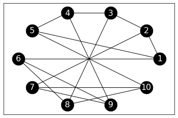
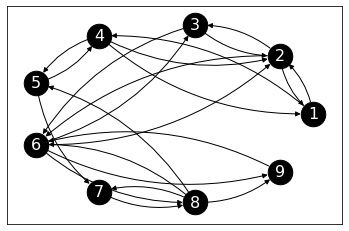

\(\newcommand{\P}{\mathbb{P}}\) \(\newcommand{\E}{\mathbb{E}}\) \(\newcommand{\S}{\mathcal{S}}\) \(\newcommand{\indep}{\perp\!\!\!\perp}\) \(\newcommand{\bmu}{\boldsymbol{\mu}}\) \(\newcommand{\bpi}{\boldsymbol{\pi}}\)
5.3. Elements of finite Markov chains#
As we mentioned, we are interested in analyzing the behavior of a random walk “diffusing” on a graph. Before we develop such techniques, it will be worthwhile to cast them in the more general framework of discrete-time Markov chains on a finite state space. Indeed Markov chains have many more applications in data science.
5.3.1. Basic definitions#
A discrete-time Markov chain is a stochastic process, i.e., a collection of random variables in this case indexed by time. We assume that the random variables take values in a common finite state space \(\S\). What makes it “Markovian” is that “it forgets the past” in the sense that “its future only depends on its present state.” More formally:
DEFINITION (Discrete-Time Markov Chain) The sequence of random variables \((X_t)_{t \geq 0} = (X_0, X_1, X_2, \ldots)\) taking values in the finite state space \(\S\) is a Markov chain if: for all \(t \geq 1\) and all \(x_0,x_1,\ldots,x_t \in \S\)
provided the conditional probabilities are well-defined. \(\natural\)
To be clear, the event in the conditioning is
It will sometimes be convenient to assume that the common state space \(\S\) is of the form \([m] = \{1,\ldots,m\}\).
EXAMPLE: (Weather Model) Here is a simple weather model. Every day is either \(\mathrm{Dry}\) or \(\mathrm{Wet}\). We model the transitions as Markovian; intuitively, we assume that tomorrow’s weather only depends - in a random fashion independent of the past - on today’s weather. Say the weather changes with \(25\%\) chance. More formally, let \(X_t \in \mathcal{S}\) be the weather on day \(t\) with \(\mathcal{S} = \{\mathrm{Dry}, \mathrm{Wet}\}\). Assume that \(X_0 = \mathrm{Dry}\) and let \((Z_t)_{t \geq 0}\) be an i.i.d. (i.e., independent, identically distributed) sequence of random variables taking values in \(\{\mathrm{Same}, \mathrm{Change}\}\) satisfying
Then define for all \(t \geq 0\)
We claim that \((X_t)_{t \geq 0}\) is a Markov chain. We use two observations:
1- By composition,
and, more generally,
is a deterministic function of \(X_0 = \mathrm{Dry}\) and \(Z_0,\ldots,Z_{t-1}\).
2- For any \(x_1,\ldots,x_t \in \S\), there is precisely one value of \(z \in \{\mathrm{Same}, \mathrm{Change}\}\) such that \(x_t = f(x_{t-1}, z)\), i.e., if \(x_t = x_{t-1}\) we must have \(z = \mathrm{Same}\) and if \(x_t \neq x_{t-1}\) we must have \(z = \mathrm{Change}\).
Fix \(x_0 = \mathrm{Dry}\). For any \(x_1,\ldots,x_t \in \S\), letting \(z\) be as in Observation 2,
where we used that \(Z_{t-1}\) is independent of \(Z_{t-2},\ldots,Z_0\) and \(X_0\) (which is deterministic), and therefore is independent of \(X_{t-1},\ldots,X_0\) by Observation 1. The same argument shows that
and that proves the claim.
More generally, one can pick \(X_0\) according to an initial distribution, independently from the sequence \((Z_t)_{t \geq 0}\). The argument above can be adapted to this case. \(\lhd\)
EXAMPLE: (Random Walk on the Petersen Graph) Let \(G = (V,E)\) be the Petersen graph.
G_petersen = nx.petersen_graph()
Show code cell source
nx.draw_networkx(G_petersen,
pos=nx.circular_layout(G_petersen),
labels={i: i+1 for i in range(10)},
node_size=600, node_color='black',
font_size=16,
font_color='white')

Each vertex \(i\) has degree \(3\), that is, it has three neighbors which we denote \(v_{i,1}, v_{i,2}, v_{i,3}\) in some arbitrary order. For instance, denoting the vertices by \(1,\ldots, 10\) as above, vertex \(9\) has neighbors \(v_{9,1} = 4, v_{9,2} = 6, v_{9,3} = 7\).
We consider the following random walk on \(G\). We start at \(X_0 = 1\). Then, for each \(t\geq 0\), we let \(X_{t+1}\) be a uniformly chosen neighbor of \(X_t\), independently of the previous history. That is, we jump at random from neighbor to neighbor. Formally, fix \(X_0 = 1\) and let \((Z_t)_{t \geq 0}\) be an i.i.d. sequence of random variables taking values in \(\{1,2,3\}\) satisfying
Then define, for all \(t \geq 0\), \( X_{t+1} = f(X_t, Z_t) = v_{i,Z_t} \) if \(X_t = v_i\).
By an argument similar to the previous example, \((X_t)_{t \geq 0}\) is a Markov chain. Also as in the previous example, one can pick \(X_0\) according to an initial distribution, independently from the sequence \((Z_t)_{t \geq 0}\).
\(\lhd\)
There are various useful generalizations of the condition in the definition of a Markov chain. These are all special cases of what is referred to as the Markov property which can be summarized as: the past and the future are independent given the present.
We record a version general enough for us here. Let \((X_t)_{t \geq 0}\) be a Markov chain on the state space \(\mathcal{S}\). For any integer \(h \geq 0\), \(x_{t-1}\in \mathcal{S}\) and subsets \(\mathcal{P} \subseteq \mathcal{S}^{t-1}\), \(\mathcal{F} \subseteq \mathcal{S}^{h+1}\) of state sequences of length \(t-1\) and \(h+1\) respectively, it holds that
One important implication of the Markov property is that the distribution of a sample path, i.e., an event of the form \(\{X_0 = x_0, X_1 = x_1, \ldots, X_T = x_T\}\), simplifies considerably.
THEOREM (Distribution of a Sample Path)
\(\sharp\)
Proof idea: We use the chain rule and the Markov property.
Proof: We first apply the chain rule
with \(A_i = \{X_{i-1} = x_{i-1}\}\) and \(r = T+1\). That gives
Then we use the Markov property to simplify each term in the product. \(\square\)
EXAMPLE: (Weather Model, continued) Going back to the Weather Model from a previous example, fix \(x_0 = \mathrm{Dry}\) and \(x_1,\ldots,x_t \in \S\). Then, by the Distribution of a Sample Path,
By assumption \(\P[X_0 = x_0] = 1\). Moreover, we have previously shown that
where \(z_{t-1} = \mathrm{Same}\) if \(x_t = x_{t-1}\) and \(z_{t-1} = \mathrm{Change}\) if \(x_t \neq x_{t-1}\).
Hence, using the distribution of \(Z_t\),
Let \(n_T = |\{0 < t \leq T : x_t = x_{t-1}\}|\) be the number of transitions without change. Then,
\(\lhd\)
It will be useful later on to observe that the Distribution of a Sample Path generalizes to
Based on the Distribution of a Sample Path, in order to specify the distribution of the process it suffices to specify
the initial distribution \(\mu_x := \P[X_0 = x]\) for all \(x\); and
the transition probabilities \(\P[X_{t+1} = x\,|\,X_{t} = x']\) for all \(t\), \(x\), \(x'\).
5.3.2. Time-homogeneous case: transition matrix#
It is common to further assume that the process is time-homogeneous, which means that the transition probabilities do not depend on \(t\):
where the last equality is a definition. We can then collect the transition probabilities into a matrix.
DEFINITION (Transition Matrix) The matrix
is called the transition matrix of the chain. \(\natural\)
We also let \(\mu_{x} = \P[X_0 = x]\) and we think of \(\bmu = (\mu_{x})_{x \in \S}\) as a vector. The convention in Markov chain theory is to think of probability distributions such as \(\bmu\) as row vectors. You will see later why it simplifies the notation somewhat.
EXAMPLE: (Weather Model, continued) Going back to the weather model, let us number the states as follows: \(1 = \mathrm{Dry}\) and \(2 = \mathrm{Wet}\). Then the transition matrix is
\(\lhd\)
EXAMPLE: (Random Walk on the Petersen Graph, continued) Consider again the random walk on the Petersen graph \(G = (V,E)\). We number the vertices \(1, 2,\ldots, 10\). To compute the transition matrix, we list for each vertex its neighbors and put the value \(1/3\) in the corresponding columns. For instance, vertex \(1\) has neighbors \(2\), \(5\) and \(6\), so row \(1\) has \(1/3\) in columns \(2\), \(5\), and \(6\). And so on.
Show code cell source
nx.draw_networkx(G_petersen, pos=nx.circular_layout(G_petersen), labels={i: i+1 for i in range(10)},
node_size=600, node_color='black', font_size=16, font_color='white')
We get:
We have already encountered a matrix that encodes the neighbors of each vertex, the adjacency matrix. Here we can recover the transition matrix by multiplying the adjacency matrix by \(1/3\).
A_petersen = nx.adjacency_matrix(G_petersen).toarray()
P_petersen = (1/3) * A_petersen
print(P_petersen)
[[0. 0.33333333 0. 0. 0.33333333 0.33333333
0. 0. 0. 0. ]
[0.33333333 0. 0.33333333 0. 0. 0.
0.33333333 0. 0. 0. ]
[0. 0.33333333 0. 0.33333333 0. 0.
0. 0.33333333 0. 0. ]
[0. 0. 0.33333333 0. 0.33333333 0.
0. 0. 0.33333333 0. ]
[0.33333333 0. 0. 0.33333333 0. 0.
0. 0. 0. 0.33333333]
[0.33333333 0. 0. 0. 0. 0.
0. 0.33333333 0.33333333 0. ]
[0. 0.33333333 0. 0. 0. 0.
0. 0. 0.33333333 0.33333333]
[0. 0. 0.33333333 0. 0. 0.33333333
0. 0. 0. 0.33333333]
[0. 0. 0. 0.33333333 0. 0.33333333
0.33333333 0. 0. 0. ]
[0. 0. 0. 0. 0.33333333 0.
0.33333333 0.33333333 0. 0. ]]
\(\lhd\)
Transition matrices have a very special structure.
THEOREM (Transition Matrix is Stochastic) The transition matrix \(P\) is a stochastic matrix, that is, all its entries are nonnegative and all its rows sum to one. \(\sharp\)
Proof: Indeed,
by the properties of the conditional probability. \(\square\)
In matrix form, the condition can be stated as \(P \mathbf{1} = \mathbf{1}\), where \(\mathbf{1}\) is an all-one vector of the appropriate size.
We have seen that any transition matrix is stochastic. Conversely, any stochastic matrix is the transition matrix of a Markov chain. That is, we can specify a Markov chain by choosing the number of states \(n\), an initial distribution over \(\mathcal{S} = [n]\) and a stochastic matrix \(P \in \mathbb{R}^{n\times n}\). Row \(i\) of \(P\) stipulates the probability distribution of the next state given that we are currently at state \(i\).
EXAMPLE: (Robot Vacuum) Suppose a robot vacuum roams around a large mansion with the following rooms: \(1=\mathrm{Study}\), \(2=\mathrm{Hall}\), \(3=\mathrm{Lounge}\), \(4=\mathrm{Library}\), \(5=\mathrm{Billiard\ Room}\), \(6=\mathrm{Dining\ Room}\), \(7=\mathrm{Conservatory}\), \(8=\mathrm{Ball\ Room}\), \(9=\mathrm{Kitchen}\).
Figure: A wrench (Credit: Made with Midjourney)
\(\bowtie\)
Once it is done cleaning a room, it moves to another one nearby according to the following stochastic matrix (check it is stochastic!):
Suppose the initial distribution \(\bmu\) is uniform over the state space and let \(X_t\) be the room the vacuum is in at iteration \(t\). Then \((X_t)_{t\geq 0}\) is a Markov chain. Unlike our previous examples, \(P\) is not symmetric. In particular, its rows sum to \(1\) but its columns do not. (Check it!) \(\lhd\)
When both rows and columns sum to \(1\), we say that \(P\) is doubly stochastic.
With the notation just introduced, the distribution of a sample path simplifies further to
This formula has a remarkable consequence. The marginal distribution of \(X_s\) is a matrix power of \(P\). As usual, we denote by \(P^s\) the \(s\)-th matrix power of \(P\). Recall also that \(\bmu\) is a row vector.
THEOREM (Time Marginals) For any \(s \geq 1\) and \(x_s \in \S\)
\(\sharp\)
Proof idea: The idea is to think of \(\P[X_s = x_s]\) as the time \(s\) marginal over all trajectories up to time \(s\) - quantities we know how to compute the probabilities of. Then we use the Distribution of a Sample Path and “pushe the sums in.” This is easier seen on a simple case. We do the case \(s=2\) first.
Summing over all trajectories up to time \(2\),
where we used the Distribution of a Sample Path.
Pushing the sum over \(x_1\) in, this becomes
where we recognized the definition of a matrix product - here \(P^2\). The result then follows. \(\square\)
Proof: For any \(s\), by definition of a marginal,
Using the Distribution of a Sample Path in the time-homogeneous case, this evaluates to
The sum can be simplified by pushing the individual sums as far into the summand as possible
where on the second line we recognized the innermost sum as a matrix product, then proceeded by induction. \(\square\)
The special case \(\bmu = \mathbf{e}_x^T\) gives that for any \(x, y \in [n]\)
EXAMPLE: (Weather Model, continued) Suppose day \(0\) is \(\mathrm{Dry}\), that is, the initial distribution is \(\bmu = (1,0)\). What is the probability that it is \(\mathrm{Wet}\) on day \(2\)? We apply the formula above to get \(\P[X_2 = 2] = \left(\bmu P^2\right)_{2}\). Note that
So the answer is \(3/8\). \(\lhd\)
It will be useful later on to observe that the Time Marginals Theorem generalizes to
for \(s \leq t\).
In the time-homogeneous case, an alternative way to represent a transition matrix is with a directed graph showing all possible transitions.
DEFINITION (Transition Graph) Let \((X_t)_{t \geq 0}\) be a Markov chain over the state space \(\mathcal{S} = [n]\) with transition matrix \(P = (p_{i,j})_{i,j=1}^{n}\). The transition graph (or state transition diagram) of \((X_t)_{t \geq 0}\) is a directed graph with vertices \([n]\) and a directed edge from \(i\) to \(j\) if and only if \(p_{i,j} > 0\). We often associate a weight \(p_{i,j}\) to that edge. \(\natural\)
EXAMPLE: (Robot Vacuum, continued) Returning to our Robot Vacuum Example, the transition graph of the chain can be obtained by thinking of \(P\) as the weighted adjacency matrix of the transition graph.
P_robot = np.array([
[0, 0.8, 0, 0.2, 0, 0, 0, 0, 0],
[0.3, 0, 0.2, 0, 0, 0.5, 0, 0, 0],
[0, 0.6, 0, 0, 0, 0.4, 0, 0, 0],
[0.1, 0.1, 0, 0, 0.8, 0, 0, 0, 0],
[0, 0, 0, 0.25, 0, 0, 0.75, 0, 0],
[0, 0.15, 0.15, 0, 0, 0, 0, 0.35, 0.35],
[0, 0, 0, 0, 0, 0, 0, 1, 0],
[0, 0, 0, 0, 0.3, 0.4, 0.2, 0, 0.1],
[0, 0, 0, 0, 0, 1, 0, 0, 0]
]
)
print(P_robot)
[[0. 0.8 0. 0.2 0. 0. 0. 0. 0. ]
[0.3 0. 0.2 0. 0. 0.5 0. 0. 0. ]
[0. 0.6 0. 0. 0. 0.4 0. 0. 0. ]
[0.1 0.1 0. 0. 0.8 0. 0. 0. 0. ]
[0. 0. 0. 0.25 0. 0. 0.75 0. 0. ]
[0. 0.15 0.15 0. 0. 0. 0. 0.35 0.35]
[0. 0. 0. 0. 0. 0. 0. 1. 0. ]
[0. 0. 0. 0. 0.3 0.4 0.2 0. 0.1 ]
[0. 0. 0. 0. 0. 1. 0. 0. 0. ]]
We define a graph from its adjancency matrix. See networkx.from_numpy_array().
G_robot = nx.from_numpy_array(P_robot, create_using=nx.DiGraph)
Drawing edge weights on a directed graph in a readable fashion is not straighforward. We will not do this here.
Show code cell source
n_robot = P_robot.shape[0]
nx.draw_networkx(G_robot, pos=nx.circular_layout(G_robot),
labels={i: i+1 for i in range(n_robot)},
node_size=600, node_color='black', font_size=16, font_color='white',
connectionstyle='arc3, rad = 0.2')

\(\lhd\)
NUMERICAL CORNER: Once we have specified a transition matrix (and an initial distribution), we can simulate the corresponding Markov chain. This is useful to compute (approximately) probabilities of complex events through the law of large numbers. Here is some code to generate one sample path up to some given time \(T\). We assume that the state space is \([n]\). We use rng.choice to generate each transition.
from numpy.random import default_rng
rng = default_rng(535)
def SamplePath(mu, P, T):
n = mu.shape[0] # size of state space
X = np.zeros(T+1) # initialization of sampe path
for i in range(T+1):
if i == 0: # initial distribution
X[i] = rng.choice(a=np.arange(start=1,stop=n+1),p=mu)
else: # next state is chosen from current state row
X[i] = rng.choice(a=np.arange(start=1,stop=n+1),p=P[int(X[i-1]-1),:])
return X
Let’s try with our Robot Vacuum. We take the initial distribution to be the uniform distribution.
mu = np.ones(n_robot) / n_robot
SamplePath(mu, P_robot, 10)
array([9., 6., 3., 6., 8., 6., 2., 1., 2., 6., 8.])
For example, we can use a simulation to approximate the expected number of times that room \(9\) is visited up to time \(10\). To do this, we run the simulation a large number of times (say \(1000\)) and count the average number of visits to \(9\).
z = 9 # state of interest
N_samples = 1000 # number of repetitions
visits_to_z = np.zeros(N_samples) # initialization of number of visits
for i in range(N_samples):
visits_to_z[i] = np.count_nonzero(SamplePath(mu, P_robot, 10) == z)
print(np.mean(visits_to_z))
1.193
\(\lhd\)